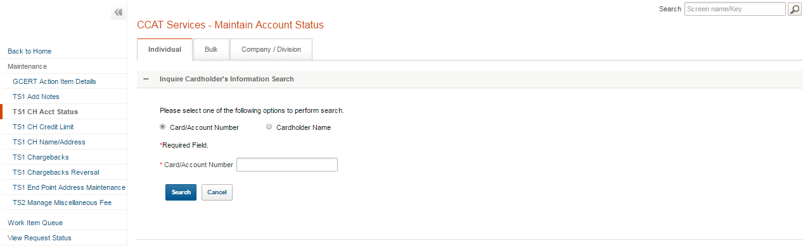
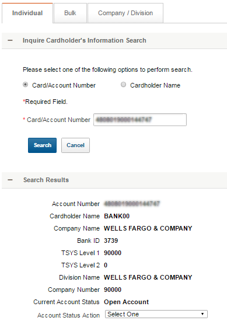

UI design & development
Wells Fargo TMS Wholesale Banking Commercial Card product uses TSYSUK/TS2 in addition to TSYS/TS1 to leverage TSYSUK/TS2’s multinational support for strategic initiatives in Europe. TSYS mainframe is not specific to Wells Fargo. These are targeted at a larger customer base. Currently, members of the Business Purchasing Service Center (BPSC) utilize green screens to access the TSYS/TS1 mainframe system. Users are required to access the new system through green screens and to use TSYS/TS1 and TSYSUK/TS2 in separate sessions, each with its own log-in. TSYSUK/TS2 has a separate set of commands and operations. This would necessitate extensive training to educate team members on new TSYSUK/TS2 commands, and the learning curve could result in a higher potential for operator error and lower team productivity.
G2T strives to be a single UI that can facilitate all mainframe access in a streamlined and consistent manner. It will enhance productivity by providing a cleaner, quicker and streamlined user experience, custom tailor-made process to suit the BPSC user needs.
The macro conversion project also strives to automate most of the routine tasks performed on the mainframe systems. Previous user task that involved multiple clicks and multiple data entry can now be done using a single button click.
My Role
Wireframe, front end development with WF-RIA, JSP

User can look for company by entering any or a combination of the fields.

On search execution results will be displayed with disabled action buttons.

Add Fee

User will access this page to add fees on a customer’s corporate account by providing/selecting information for the fee details fields. All the drop down boxes will be defaulted to blank and will be populated with a valid value once the user makes a selection. The dropdown option for "Select Fee Amount" depends on the fee selected by the user in the previous steps. User can attach any documents (only PDF/DOC/MSG sported) to support the fee request submitted fo approval.

Delete - To delete when user clicks on delete link a confirmation message shows. clicking on ok deletes the entire row.

Populates the fee details in the form to be edited.

This screen displays all fee details entered by the user to confirm & proceed with submission.

The entered fee details is submitted for approval.
Reverse Fee

List of all fee added to company via Add Fee flow.

Clicking on Reverse link a panel shows with all the fee details that were submitted during the add fee request. User can edit description, fee volume & upload supporting documents.

This screen displays reverse fee details entered by the user, with edit & delete links.
Edit - opens the form in a panel for user to edit the fee details.
Delete - deletes the entered fee details row from top datatable & resets the fee details to shows in the bottom datatable.

This screen displays all reverse fee details entered by the user to confirm and proceed with submission.
Search by Account Number 
Search Results 
Open to Close
Front-end design & development
Robust search capability for marketing and sales reps to profile the key dimensions of an account. Comprehensive view of accounts with key data points around Installed base, competitive foot prints, Service Contracts, Contact and existing Opportunities. The dashboard helps marketing and sales reps to achieve significant account penetration increasing their productivity.
My Role
Conceptualization design, wireframe, front end development with bootstrap and AngularJS
Web app Developement
Website showcasing how solutions provided by HP helped outline detailed Business and IT strategies for various companies leading them into being more effective. An interactive way to search by company names, strategies, problem statement and HP solutions. Users can also key in issues, goals and strategies to find the best possible solution.
My Role
Developement in HTML, CSS, jQuery, XML
Site redesign to enhance UX
The goal to redesign was to enhance user experience in artifact search.
My Role
Information architecture, icon design
Search page development in HTML, CSS, jQuery & XML data pulled from various lists by SharePoint web services.
- Search results shows all documents and files (aspx & html) having the keyword resulting extra records (leadig to multiple results pages) & sometimes duplicates making it difficult for user to get relevant information.
- Results can not be sorted by Publication Date, Author or Categoy.
- Artifacts category name doesn’t show in the results. It gets difficult for the user to categorise an artifact by its title.
- Document Publisher name also shows as Author which gets confusing for the user.
- Results display format shows only 4-5 records above the fold making the user to scroll a lot.
- Customised search module developed with jquery & SharePoint Web Services.
- Search records are filtered to show only pdfs having the keyword either in the title or the abstract of the artifact eliminating extra & duplicate records.
- Displaying the records in tabular format enables column sorting & shows more records and related information in an intuative way.
- User can view more records without scrolling.
Design
Know Your Buddy is a web based portal to capture individual team member details and account information. This portal is a centralized repository to keep related information about a projects, various sub-accounts with a search engine to find out team member or account information based on given search criteria.
My Role
Layout design
POC of android app designed for competitor quarterly market performanace.
My Role
Design

Links for user to choose.
List of competitors to choose from.
Figures for APL region for Q1 between HP & IBM
Development
SharePoint solution to upload account details and validate quota figures. Global Area Managers enter their figures directly into SharePoint which is locked by Admin to be validated by District Managers. In case the DM doesn't agree with the figures already entered the entry window is unlocked to resolve by re-entering the figures.
My Role
Developement in HTML, CSS, jQuery, XSLT